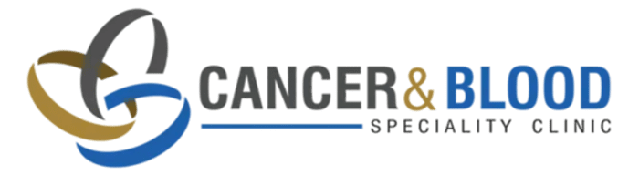
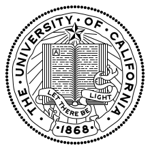
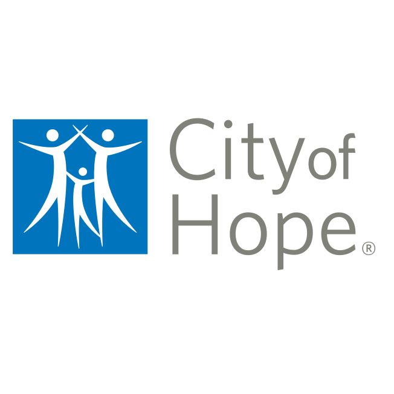
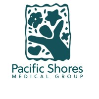

Professional appointments

Cancer & Blood Specialty Clinic
Attending Physician
Aug 2024 - Present
UCLA
Clinical Associate Professor of Medicine
Faculty appointments since 2006
City of Hope
Attending Physician and Clinical Associate Professor
Aug 2021 - Aug 2024
Pacific Shores Medical Group
Attending Physician
Jul 2006 - Aug 2021